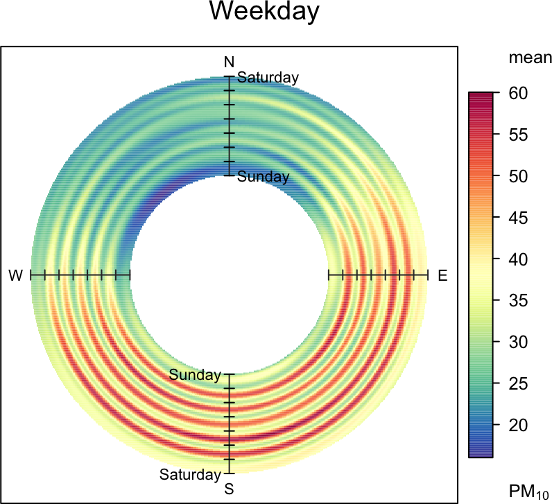
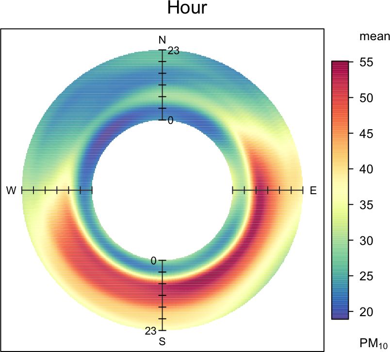
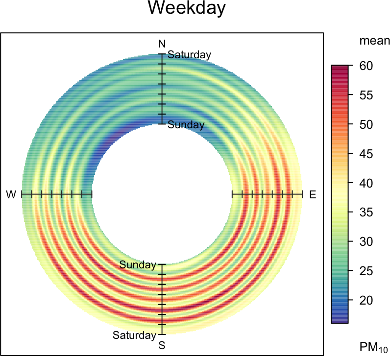
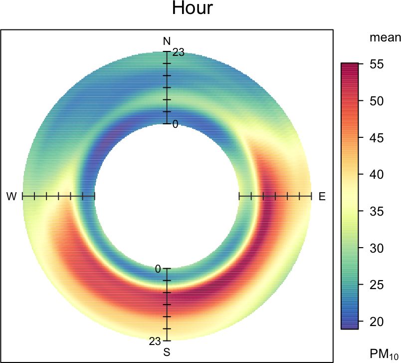

Section 9 Polar annulus
9.1 Purpose
The polarAnnulus function provides a way in which to consider the
temporal aspects of a pollutant concentration by wind direction. This
is another means of visualising diurnal, day of week, seasonal and
trend variations. Plotting as an annulus, rather than a circle avoids
to some extent the difficulty in interpreting values close to the
origin. These plots have the capacity to display potentially important
information regarding sources; particularly if more than one pollutant
is available.
9.2 Example of use
We apply the four variations of the polarAnnulus plot to PM10
concentrations at Marylebone Road. Figure 9.1 shows the
different temporal components. Similar to other analyses for PM10,
the trend plot show that concentrations are dominated by southerly
winds and there is little overall change in concentrations from 1998
to 2005, as shown by the red colouring over the period. The seasonal
plot shows that February/March is important for easterly winds, while
the summer/late summer period is more important for southerly and
south-westerly winds. The day of the week plot clearly shows
concentrations to be elevated for during weekdays but not weekends —
for all wind directions. Finally, the diurnal plot highlights that
higher concentrations are observed from 6 am to 6 pm.
Interestingly, the plot for NOx and CO (not shown, but easily produced) did not show such a strong contribution for south-easterly winds. This raises the question whether the higher particle concentrations seen for these wind directions are dominated by different sources (i.e. not the road itself). One explanation is that during easterly flow, concentrations are strongly affected by long-range transport. However, as shown in the diurnal plot in Figure 9.1, the contribution from the south-east also has a sharply defined profile — showing very low concentrations at night, similar to the likely contribution from the road. This type of profile might not be expected from a long-range source where emissions are well-mixed and secondary particle formation has had time to occur. The same is also true for the day of the week plot, where there is little evidence of ‘smeared-out’ long-range transport sources. These findings may suggest a different, local source of PM10 that is not the road itself. Clearly, a more detailed analysis would be required to confirm the patterns shown; but it does highlight the benefit of being able to analyse data in different ways.
data(mydata)
polarAnnulus(mydata, poll = "pm10", period = "trend", main = "Trend")
polarAnnulus(mydata, poll = "pm10", period = "season", main = "Season")
polarAnnulus(mydata, poll = "pm10", period = "weekday", main = "Weekday")
polarAnnulus(mydata, poll = "pm10",period = "hour", main = "Hour") 

Figure 9.1: Examples of the polarAnnulus function applied to Marylebone Road.
Where there is interest in considering the wind direction dependence
of concentrations, it can be worth filtering for wind speeds. At low
wind speed with wind direction becomes highly variable (and is often
associated with high pollutant concentrations). Therefore, for some
situations it might be worth considering removing the very low wind
speeds. The code below provides two ways of doing this using the dplyr
filter function. The first selects data where the wind speed is >2 m s-1. The second part shows how to select wind speeds greater
than the 10th percentile, using the quantile function. The latter
way of selecting is quite useful, because it is known how much data
are selected i.e. in this case 90%. It is worth experimenting with
different values because it is also important not to lose information
by ignoring wind speeds that provide useful information.
## wind speed >2
polarAnnulus(filter(mydata, ws > 2), poll="pm10", type = "hour")
## wind speed > 10th percentile
polarAnnulus(subset(mydata, ws > quantile(ws, probs = 0.1, na.rm = TRUE)),
poll="pm10", type = "hour")